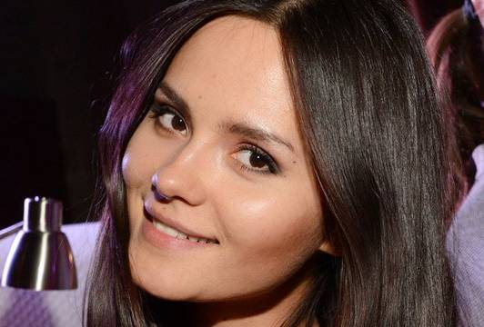
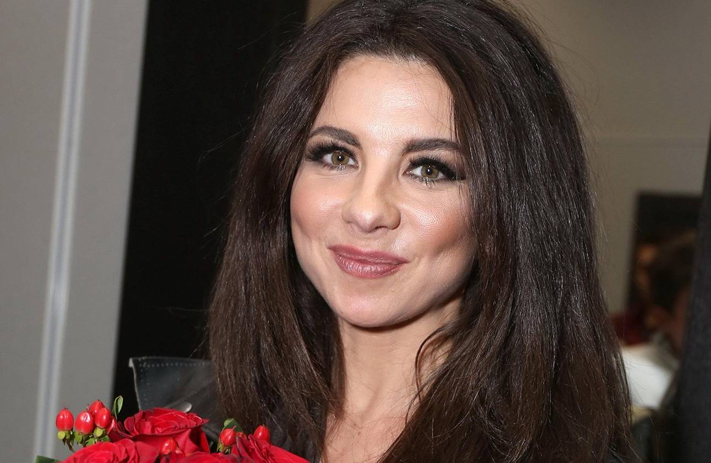

Все фотки будут показаны после полной загрузки
Красавицы
Виктория Дайнеко (р. 12 мая 1987 года)
Слушаем x из y
Название
Исполнитель
00:00
00:00
Елена Темникова (р. 18 апреля 1985 года)

Екатерина Ли (р. 7 декабря 1984 года)

Анна Плетнёва (р. 21 августа 1977 года)
Наталья Чистякова-Ионова (р. 7 июня 1986 года)